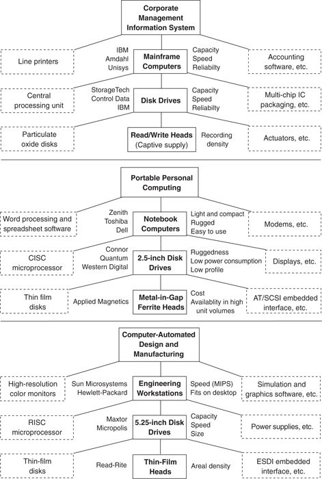
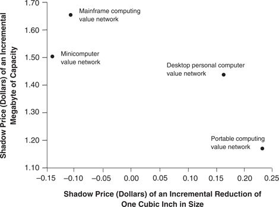

The way value is measured differs across networks. 9 In fact, the unique rank-ordering of the importance of various product performance attributes defines, in part, the boundaries of a value network. Examples in Figure 2.2, listed to the right of the center column of component boxes, show how each value network exhibits a very different rank-ordering of important product attributes, even for the same product. In the top-most value network, disk drive performance is measured in terms of capacity, speed, and reliability, whereas in the portable computing value network, the important performance attributes are ruggedness, low power consumption, and small size. Consequently, parallel value networks, each built around a different definition of what makes a product valuable, may exist within the same broadly defined industry.
Although many components in different systems-of-use may carry the same labels (for example, each network in Figure 2.2 involves read-write heads, disk drives, RAM circuits, printers, software, and so on), the nature of components used may be quite different. Generally, a set of competing firms, each with its own value chain, 10 is associated with each box in a network diagram, and the firms supplying the products and services used in each network often differ (as illustrated in Figure 2.2 by the firms listed to the left of the center column of component boxes).
As firms gain experience within a given network, they are likely to develop capabilities, organizational structures, and cultures tailored to their value network’s distinctive requirements. Manufacturing volumes, the slope of ramps to volume production, product development cycle times, and organizational consensus identifying the customer and the customer’s needs may differ substantially from one value network to the next.
Figure 2.2 Examples of Three Value Networks

Source: Reprinted from Research Policy 24, Clayton M. Christensen and Richard S. Rosenbloom, “Explaining the Attacker’s Advantage: Technological Paradigms, Organizational Dynamics, and the Value Network,” 233–257, 1995 with kind permission of Elsevier Science—NL, Sara Burgerhartstraat 25, 1055 KV Amsterdam, The Netherlands.
Given the data on the prices, attributes, and performance characteristics of thousands of disk drive models sold between 1976 and 1989, we can use a technique called hedonic regression analysis to identify how markets valued individual attributes and how those attribute values changed over time. Essentially, hedonic regression analysis expresses the total price of a product as the sum of individual so-called shadow prices (some positive, others negative) that the market places on each of the product’s characteristics. Figure 2.3 shows some results of this analysis to illustrate how different value networks can place very different values on a given performance attribute. Customers in the mainframe computer value network in 1988 were willing on average to pay $1.65 for an incremental megabyte of capacity; but moving across the minicomputer, desktop, and portable computing value networks, the shadow price of an incremental megabyte of capacity declines to $1.50, $1.45, and $1.17, respectively. Conversely, portable and desktop computing customers were willing to pay a high price in 1988 for a cubic inch of size reduction, while customers in the other networks placed no value on that attribute at all. 11
Figure 2.3 Difference in the Valuation of Attributes Across Different Value Networks
